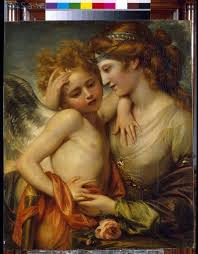

Le role de cupidon
Cupidon
Cupidon est souvent représenté sous la forme d'un ange. Ses attributs sont un arc, un carquois, une fleur et des ailes. Avec son arc, il envoie des flèches censées représenter les pointes du désir dans le cœur des dieux et des hommes.

Découvrez l'histoire de cupidon et Pshyché.
En savoir plus sur l'histoire de cupidon et Pshyché
il vous emmenera vers une page plus detaille de son roles.
En savoir plus sur le role de cupidon